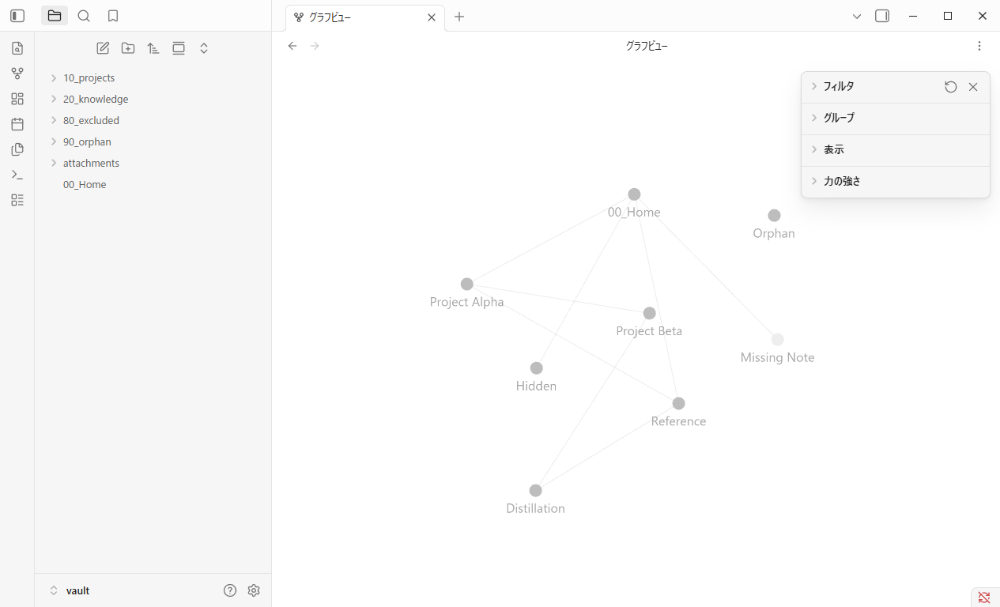
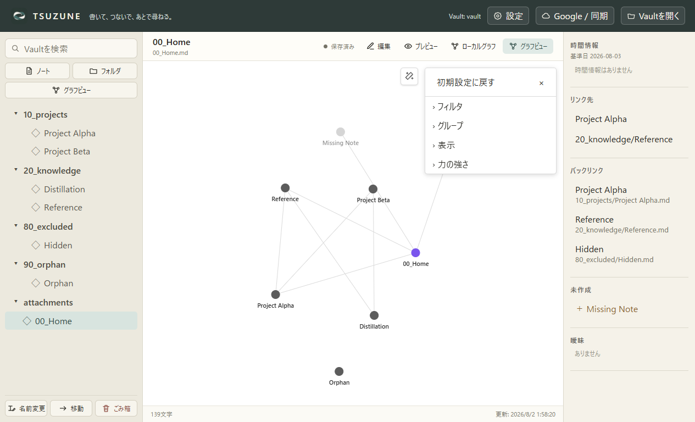

MATCHED — この1項目のみ
固定fixture、1265×768、DPR 1、Default light themeで比較しました。Obsidian 1.13.4は未保存のGlobal Graphで設定パネルを開いて表示します。TSUZUNEもVault scopeの初期値だけを合わせました。

.obsidian/graph.jsonはclose: false。
| 対象 | 結果 |
|---|---|
| 未保存のVault全体グラフ | settingsOpen: trueへ変更 |
| 未保存のLocal Graph | 従来どおり閉じた状態 |
| 利用者が保存した開閉状態 | 明示値を優先し、変更しない |
| Search files queryの再起動保存 | Obsidian固定版の非空query証拠がないため未実装・未判定 |
node drag、camera、context menu、Groups、Animate、Restore defaults、Local／Global別の再起動後保存は未比較です。Graph parity全体を完了とは扱いません。